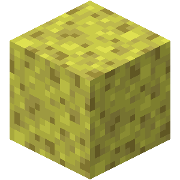

El bloque de esponja es uno de los más raros de encontrar en Minecraft, ya que solo aparece en los templos oceánicos y solo al derrotar guardianes ancianos.
Minecraft ofrece varios modos de juego, como supervivencia, creativo y aventura. En el modo creativo, los jugadores tienen recursos ilimitados y pueden volar, mientras que en supervivencia deben recolectar recursos y defenderse de criaturas.

Existen tres dimensiones principales en Minecraft: el Overworld (mundo normal), el Nether (un mundo infernal) y el End (un mundo oscuro con el jefe final, el Ender Dragon).